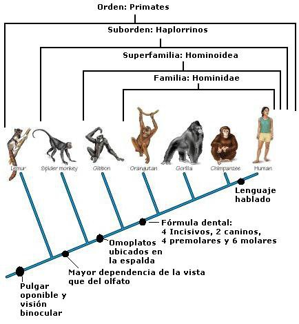
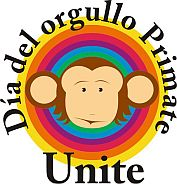
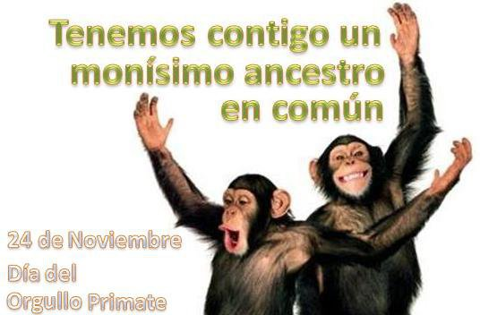
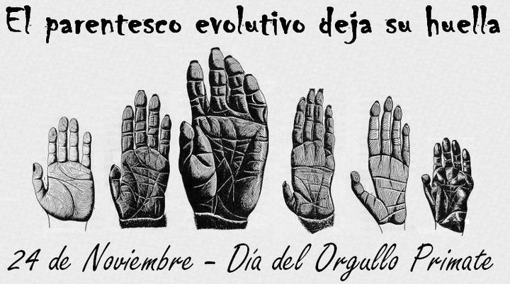
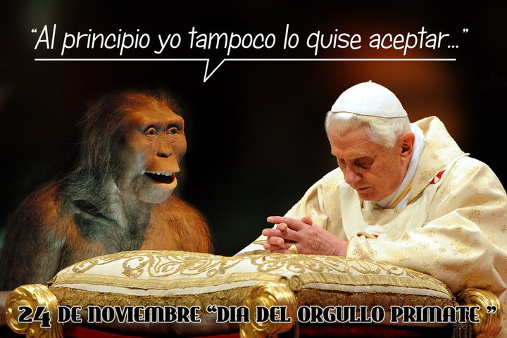

¿Es posible rechazar un hecho científico como la evolución de los primates sin generar consecuencias en las demás ramas científicas?
Isaac Asimov apuntaba que los creacionistas y otros que niegan nuestro parentesco con los monos, se centran exclusivamente en nuestra relación con los simios pero nunca los ves discutir en cortes de justicia para que no se enseñe el parentesco entre los perros y los lobos. El problema es humano; la desconexión del humano con su naturaleza y su persistente inmadurez intelectual. Relacionarnos con los simios nos apea del trono, alejándonos de la imagen divina y regresándonos a esa realidad que refleja la familiar mirada de un chimpancé. Admitir que descendemos del mono es quitarle el crédito a los dioses, y ya sabemos cómo es la relación de los humanos con sus dioses: antigua y arraigada.
Los estudios antropológicos nos cuentan que durante el paleolítico, el Homo sapiens comenzó a enterrar sus muertos. Las tumbas con objetos para “acompañar” al difunto, revelan un poco más del pensamiento abstracto que nacía hace unos 200,000 años. Más aún, las ciencias que estudian el pasado del hombre han descubierto objetos con pinturas simbólicas de hace decenas de miles de años, de hecho, descubrimientos en el 2006 en unas cuevas en el desierto Kalahari de pinturas de serpientes y flechas que habían sido trasladas hasta allí de lugares lejanos, apuntan que los seres humanos estaban elucubrando rituales abstractos más complejos sobre quién sabe qué cosas desde hace unos 70,000 años.
Estudiar el desarrollo de la especie humana sobre el planeta se asemeja mucho a las notas que toma una madre sobre su bebé y así lo presentan los investigadores que se pasan la vida analizando fósiles de homínidos: sus primero pasos erguidos; el uso de herramientas; las nuevas comidas; el cambio en la forma y el tamaño del cuerpo; el aumento del tamaño del cerebro; la vida social (lenguaje y demás) y la creación de símbolos (pensamiento abstracto). Casi todos los museos dedicados al recorrido de los homíninos por el planeta, dividen el estudio de nuestros ancestros en estos hitos o logros alcanzados.
Y es observable; como un niño, nuestra especie ha ido aprendiendo a caminar, a descubrir y cocinar su comida, a usar objetos para ayudarse a progresar, ha crecido y su cuerpo ha variado, sus ideas son cada vez más complejas debido al crecimiento de su red neuronal, aprende a socializar y a vivir en grupos y comienza a pensar de forma abstracta y a formular leyes. Sin embargo, es sólo cuando alcanza la adultez que consigue pensar racionalmente, a usar la razón y la investigación para conocer al mundo que lo rodea y suprimir mediante la creación del método científico, cualquier asomo emotivo, sentimental o primitivo que pueda contaminar la lectura de las evidencias.
El estado actual del mundo sugiere que la especie humana aún no alcanza, en su promedio, la adultez, y continúa detenida en un estado de pensamiento infantil abstracto y fantasioso.
Y es que no es fácil quitarse todos esos miles de años de encima; además, no podemos olvidar que el medio tampoco nos ha cultivado. Por el contrario, el medio ha contribuido a extender la niñez del Homo sapiens, imponiendo tantas veces por la fuerza una creencia tras otra y perpetuando esta conducta desde el nacimiento de cada niño sobre el planeta. Los tiempos y las zonas geográficas varían las caras y los nombres de los dioses, pero la conducta de los líderes que los promueven y los fieles que los perciben a través de la fe, continúa siendo pavorosamente similar.
Hoy, pobladores de Estados Unidos demandan poner una calcomanía en las tapas de los libros de biología que advierta que la evolución es tan “solo una teoría”, una afirmación contraproducente que evidencia su ignorancia sobre lo que significa teoría en la ciencia. Pero nadie refuta la teoría de la relatividad y hasta he visto muchos creyentes amantes de la ciencia con imágenes del carismático Albert Einstein en sus paredes. Charles Darwin no tiene muchos seguidores entre religiosos, la evolución por selección natural es el elefante en la iglesia; y como es natural, el elefante hace cada vez más y más ruido.
Las creencias son enjutas evolutivas que llevan decenas de miles de años con la especie y que aún caracterizan nuestra inmadura etapa de desarrollo. La investigación científica, a su vez, ha sido la ventana por donde los humanos hemos ido lanzando creencias cada vez que el conocimiento las hace innecesarias; fue por esa ventana que cayó la teoría de que la Tierra era el centro del universo y muchas más similares. En ese sentido, estudios recientes confirman que individuos con altos niveles de educación son los que más creencias lanzan por la metafórica ventana. De hecho, entre los científicos, el nivel de ateísmo está muy por encima que en el nivel promedio de la población, y mientras más eminentes y laureados, más ateos encuentras entre ellos (http://www.genciencia.com/no-te-lo-creas/los-cientificos-creen-generalmente-en-dios).

Las culturas también influyen en la aceptación o no de la evolución; en Japón, por ejemplo, más de un 96% de la población la acepta como un hecho; en Polonia, un país católico, un 76% la acepta también como tal (los católicos aceptaron la evolución, siempre y cuando el Creador quede detrás de la Gran Explosión permitiendo la historia del Belén y esas cosas, pero no sé en qué está eso ahora que Ratzinger está a la cabeza); en Estados Unidos, sin embargo, 47% de la población cree que el hombre fue creado por algún dios. Los analistas responsabilizan a la promoción del creacionismo y de ideas religiosas que aseguran vivimos en un planeta joven, como promotoras de ese tipo de pensamiento mágico. De acuerdo con el Almanaque Mundial del 2001, habemos 2.7 millones de ateos en América Latina, una minoría que refleja, por ende, el estado de la educación y el alto nivel de actividad religiosa.
Evidentemente y a pesar de todo el conocimiento acumulado, las creencias continúan secuestrando los cerebros de miles de millones de personas con efectos muchas veces torturantes; un vistazo breve por las teocracias del planeta les contará la historia mejor que yo. Estos médiums modernos que claman tener línea directa con los dioses, no son muy distintos a los humanos que pintaban serpientes en las cuevas y sacrificaban otros animales para aplacar la ira de sus dioses. La naturaleza es cruel e indiferente y el cerebro del hombre es complejo; no le tomó mucho tiempo para comprender que necesitábamos algo que nos diera esperanza ante la ignorancia desmedida de un animal que comenzaba a tener pensamientos profundos sobre sí mismo, los demás y su alrededor pero pocos datos para sustentarlos.
Por eso aún nos aferramos a nuestros dioses, a la vida eterna, al encuentro con los difuntos queridos y con nuestro creador. Son ideas antiguas representadas en cada una de las tumbas con objetos para que el muerto los llevara consigo. Seguimos aferrados a esos principios inmaduros porque nos brindan cierta paz; aún así, continúan alimentándose de la ignorancia.
Que la evolución no sea enseñada apropiadamente en tantas escuelas también tiene que ver con el rechazo a ser primate. Mano Singham, ingeniero con un doctorado en física nuclear de la Universidad de Pittsburg y director del Centro para la Innovación en la Enseñanza y la Educación en la Universidad de Case, asegura que el problema está en la forma “desconectada” en que se enseña la ciencia.
“Es como si los hechos científicos estuvieran expuestos en un tipo de mesa buffet y cada cual es libre de tomar y elegir lo que quiera, dependiendo de sus preferencias personales. ¿Algo te suena razonable? Acéptalo. ¿Algo no concuerda con tus creencias religiosas? Recházalo. Pero en la realidad no puedes hacer esto con los hechos científicos porque no son entidades desconectadas. Todos están relacionados por sus teorías y resultados individuales no pueden ser rechazados sin consecuencias”, explica Singham.
Y mucho menos rechazar toda una teoría científica. La ciencia no es religión. Interpretar resultados para que se adapten a las creencias del investigador es considerado fraude y el método científico fue creado para prevenirlo y detectarlo. El que estudia y usa los resultados del progreso científico no puede ser selectivo, no puede aceptar el progreso en la genética y negar que entre el chimpancé y nosotros hay una nimia diferencia entre genomas. No se puede aceptar que los perros descienden de los lobos y luego negar que somos primates.
Hoy, 24 de noviembre del 2010, deseamos celebrar por primera vez la importancia de ese conocimiento y resaltar la necesidad de involucrar a los educadores en este movimiento. Son ellos los que deben comprender que el progreso científicos obtenido hasta el momento es parte de una red compleja que inicia (a lo mejor) en ese otro cosmos que Roger Penrose pareció distinguir detrás de la Gran Explosión y que se perpetúa en la evolución de vida inteligente en planetas como la Tierra. En nosotros, primates ya maduros, observando los cielos sin dioses.
Aspectos, motivos, reconocimientos
El manifiesto primate

{kind=link}
El Día del Orgullo Primate será el 24 de Noviembre porque en esta fecha Darwin publicó el Origen de la especies en 1859, y porque también un 24 de noviembre, esta vez de 1974, se descubrió el fósil más completo de un Australopithecus afarensis, la famosa Lucy
La promoción de esta celebración racionalista está acompañada de la divulgación del siguiente manifiesto:
Nos sentimos orgullosos de ser miembros del orden de los primates. La inclusión en el grupo de los primates no es solo un aspecto taxonómico sino que revela también el parentesco evolutivo que tenemos con los demás primates.
Nos sentimos orgullosos de “descender de un simio”. No de una especie de simio actual, sino de un simio extinto, pero simio al fin y al cabo. No nos avergüenza nuestro origen evolutivo.
Queremos hacer un reconocimiento al trabajo de los paleontólogos que han ayudado a descifrar nuestros orígenes evolutivos y deseamos que se siga desarrollando el trabajo de los paleontólogos, así como la divulgación de sus investigaciones.
Queremos hacer un reconocimiento a todos los biólogos y conservacionistas que trabajan para ayudar a conservar las especies de primates actuales.
Queremos declarar que los seres humanos no estamos separados de la naturaleza, sino que somos parte de la naturaleza, ya que nos relacionamos con ella en las interacciones ecológicas y por nuestro origen evolutivo.
Manifestamos que nos sentimos orgullosos de ser homínidos y de que nuestros parientes más cercanos sean los simios africanos. La anatomía comparada y la genética nos muestra esta relación filogenética y tal hecho no nos hace menos como seres humanos.
Queremos que el conocimiento de los orígenes humanos que nos revela la ciencia esté disponible en todas las escuelas y denunciamos el bloqueo que hacen de ello los grupos fundamentalistas religiosos.
Manifestamos que la oposición que hacen los creacionistas respecto al parentesco de los humanos con los demás primates y de nuestra evolución es científicamente deshonesta y responde solamente a intereses doctrinales. Los creacionistas tienen derecho a creer lo que deseen pero no pueden pretender pasar por alto el testimonio fósil, ni del ADN, ni de hacer pasar sus convicciones religiosas como una explicación al mismo nivel de la ciencia.



Volver al índice de la Lupa Herética
© 2008-2021 Glenys Álvarez y Sin Dioses. Prohibida la reproducción con fines comerciales.
Comentarios
Comments powered by Disqus